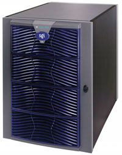

Андрей Борзенко
Borz@bytemag.ru
Благодаря постоянному внедрению архитектурных новшеств компания SGI (http://www.sgi.com) давно уже стала признанным лидером в создании программно-аппаратных средств для высокоэффективных вычислений. Так, еще в 1988 г. началась работа над первой NUMA-машиной - частью проекта DASH совместно со Стэнфордским университетом. Вообще говоря, одной из наиболее совершенных и гибких при построении серверов по праву считается архитектура ccNUMA (cache coherence Non-Uniform Memory Access) с неоднородным доступом к памяти и поддержанием когерентности кэш-памяти всех процессоров, в том числе принадлежащих разным узлам. Система ccNUMA обычно состоит из набора узлов, каждый из которых имеет собственные процессоры, локальную оперативную память и средства ввода-вывода. Архитектура ccNUMA вовсе не ограничивается массивно-параллельными вычислительными системами (MPP, Massive Parallel Processing). Она активно применяется и при построении систем с небольшим числом процессоров в качестве альтернативы симметричной многопроцессорной архитектуре (SMP, Symmetrical Multi Processing).
В отличие от классической архитектуры NUMA, при использовании кэш-когерентного доступа к неоднородной памяти ccNUMA все процессоры объединены в один узел, причем первый уровень иерархии памяти образует их кэш-память, а ccNUMA поддерживает когерентность внутри узла аппаратно. В системах ccNUMA распределенная память выглядит как единое адресное пространство. Не происходит никакого копирования страниц или данных, нет программной передачи сообщений для синхронизации доступа. Есть просто единый массив памяти (физически, впрочем, состоящий из отдельных частей). Аппаратная когерентность кэш-памяти означает, что не требуется никакого ПО для поддержки актуальности множества копий данных. Все это выполняется на аппаратном уровне так же, как в любом SMP-узле, -- с одним экземпляром ОС и множеством процессоров.
За последние несколько лет корпорация SGI кардинальным образом дополнила и модернизировала выпускаемые семейства компьютеров. В частности, ее усилия по разработке архитектуры ccNUMA воплотились в серверы семейства Origin 3x00. Эти компьютеры на базе технологии NUMAflex имеют архитектуру памяти NUMA 3 (это уже третье поколение подобной архитектуры). Благодаря модульной конструкции новое семейство серверов SGI может легко масштабироваться в расчете на конкретную задачу или приложение с использованием набора базовых модулей. При этом вычислительную мощность сервера можно наращивать от 2 до 512 процессоров, а производительность подсистемы ввода-вывода - от 11,2 до 716 Гбайт/с.
Напоминающая по своему принципу детский конструктор, модульная архитектура NUMAflex позволяет отказаться от привычной практики - покупать высокопроизводительные серверы с заведомым запасом мощности. Теперь пользователи имеют возможность расширять и модернизировать в своих системах только необходимые элементы или добавлять новые технологии по мере их появления, в то время как раньше им приходилось приобретать дорогостоящие системы, возможности которых либо намного превосходили требования владельцев, либо быстро устаревали, так что их требовалось полностью заменять.
Благодаря NUMAflex каждый модуль системы наделяется конкретной функцией и может быть связан (при помощи высокоскоростного соединения) со многими другими модулями разных типов, создавая единую конфигурацию. В зависимости от конфигурации одни и те же модули можно использовать для последующей модернизации и повышения производительности.
Не зря в названии архитектуры фигурирует слово flex (сокращение от английского flexibility - гибкость). NUMAflex действительно отличается особой гибкостью в построении различных конфигураций системы и ее изменении "на лету", в процессе функционирования. В NUMAflex реализована возможность разбивать всю ccNUMA-систему на разделы (партиции, или домены), которые тоже представляют собой ccNUMA- или SMP-компьютеры. Деление на разделы позволяет преображать ccNUMA-систему в кластерную структуру. Узлами этого кластера могут быть опять-таки ccNUMA-cерверы. Новая технология используется не только в высокопроизводительных серверах серии Origin 3х00, но и в системах визуализации Onyx 3000.
Семейство Origin 3000 состоит из моделей Origin 3200, 3400 и 3800, причем последние могут содержать от 2 до 512 процессоров и до 1 Tбайт оперативной памяти. Эти многопроцессорные системы работают под управлением ОС IRIX 6.5, первой в мире 64-разрядной ОС UNIX, что обеспечивает высокую производительность и суперкомпьютерные возможности для решения практических задач. Кроме того, новые модели полностью совместимы с приложениями для систем предыдущего поколения Origin 2000 и Onyx2.
|  | Origin 3200.
|
Особенности архитектуры базовых микропроцессоров
Все системы с архитектурой NUMAflex в настоящее время строятся на RISC-процессорах MIPS R12000A 400 МГц (R14000 500 МГц). Как было заявлено, в ближайшее время появятся вычислительные модули на базе 64-разрядных процессоров Intel Itanium. Таким образом, пользователь может выбирать тип используемых процессоров или модернизировать всю систему, заменяя только вычислительные модули.
Архитектура MIPS (Microprocessor without Interlocked Pipeline Stages), разработанная специалистами SGI/MIPS Technologies, была одной из первых RISC-архитектур, получивших признание отрасли. В настоящее время она лицензирована многими крупнейшими производителями полупроводниковых устройств, среди которых можно отметить Broadcom, IDT, LSI Logic, NEC, NKK, Philips и Toshiba. Разработан специальный стандарт, обеспечивающий переносимость бинарных приложений между различными MIPS-платформами, работающими под управлением ОС UNIX. У MIPS Technologies, пожалуй, самый длительный опыт работы с 64-разрядными архитектурами, а выпускаемые ею микропроцессоры поддерживают создание SMP-архитектур с разделяемой памятью из десятков микропроцессоров. Пользователей привлекает в этой архитектуре ориентация на использование мультимедиа и высококачественных средств визуализации изображений. Довольно часто микропроцессоры этого семейства применяются для создания встроенных контроллеров. Собственно аббревиатура MIPS означает "микропроцессор без задержек ожидания конвейера". В самом названии подчеркивается важнейшее свойство этой RISC-архитектуры - сбалансированность тракта выборки команд с функциональными узлами процессора.
Семейство кристаллов R1x000 можно охарактеризовать как суперскалярные микропроцессоры с внеочередным спекулятивным выполнением команд, в которых используется техника переименования регистров и динамическое предсказание переходов. В частности, R10000 может выполнять четыре команды за такт, причем выборка и декодирование четырех команд также происходит за один такт. Емкость кэш-памяти первого уровня в процессоре составляет 32 Кбайт для команд и столько же для данных. Оба устройства относятся к двухканальным наборно-ассоциативным. Емкость кэш-памяти второго уровня может варьироваться в диапазоне от 0,5 до 16 Мбайт. В процессоре предусмотрен полностью ассоциативный буфер быстрой переадресации TLB (емкостью 64 строки) и дополнительный буфер TLB для команд (емкостью 8 строк).
При разработке процессора R10000 большое внимание было уделено эффективной иерархии памяти. В частности, в этом кристалле обеспечивается раннее обнаружение промахов кэш-памяти с выполнением другой полезной работы. Так, кэш-память поддерживает одновременную выборку и выполнение команд загрузки и записи данных в память, а также операции перезагрузки строк кэш-памяти. Работа конвейеров кэш-памяти данных тесно координирована. При обнаружении промаха при обращении к кэш-памяти данных ее работа не блокируется, следовательно, она может продолжать обслуживать следующие запросы.
Архитектура R1х000 включает 64 физических регистра. В процессоре имеется пять полностью независимых исполнительных устройств: два целочисленных, два вещественной арифметики, а также устройство загрузки/записи.
Время выполнения всех целочисленных операций, за исключением операций умножения и деления, составляет один такт. Целочисленные операции умножения вырабатывают произведение с двойной точностью. Для операций с одинарной точностью распространение знака результата до 64 разрядов происходит прежде, чем он будет помещен в регистры. Время выполнения операций с двойной точностью примерно в два раза больше, чем операций с одинарной точностью.
Кроме основных устройств вещественной арифметики существуют два дополнительных, которые обрабатывают длинные операции деления и вычисления квадратного корня. Устройство загрузки/записи выполняет команды загрузки, записи, предварительной выборки, а также инструкции для работы с кэш-памятью. Внешняя кэш-память второго уровня управляется с помощью внутреннего контроллера, который имеет для этой цели специальный порт. По магистрали шириной в 128 разрядов пересылаются данные на внутренней тактовой частоте 200 МГц. Системный 64-разрядный интерфейс R10000 используется в качестве шлюза между самим процессором, связанной с ним кэш-памятью второго уровня и остальной системой. Микросхема R10000 допускает два способа организации многопроцессорной системы.
Архитектура следующего за R10000 кристалла, R12000, отличается весьма незначительно. Так, в четыре раза возросла емкость таблицы предсказания переходов, появилась кэш-память адресов переходов, в адресной очереди были введены отдельные конвейеры для проверки тегов и для расчета адресов, емкость активного списка очереди команд увеличилась с 32 до 48 строк, вдвое выросла емкость таблицы использования данных в контроллере кэш-памяти второго уровня. Кроме того, улучшена расщепленная обработка транзакций на системной шине для уменьшения времени занятости кэш-памяти второго уровня. Стоит отметить, что в R12000 все команды загрузки регистров, записи в память и работы с кэш-памятью посылаются сначала в очередь целочисленных команд, а оттуда выдаются в исполнительное устройство. После этого они удаляются из очереди целочисленных команд и помещаются в очередь команд загрузки регистров и записи в память. Такая схема, по утверждению разработчиков, позволила даже упростить конструкцию R12000 по сравнению с R10000.
В R12000 была также несколько доработана архитектура кэш-памяти. Выполненный с соблюдением проектных норм 0,25 мкм кристалл R12000 содержит 6,9 млн. транзисторов. На тактовой частоте 300 МГц он показывает производительность 27,5 SPECfp95.
Версия процессора R12000A появилась в июле прошлого года и полностью основана на архитектуре R12000. Изменилась только технология изготовления. Благодаря ужесточению проектных норм до 0,18 мкм тактовые частоты удалось увеличить до 360 и даже 400 МГц. Стоит отметить, что короткие конвейеры, заложенные в архитектуре, затрудняют наращивание тактовых частот. Так, при емкости кэш-памяти второго уровня 8 Мбайт производительность кристалла на частоте 400 МГц увеличилась до 43,5 SPECfp95.
По имеющимся данным (The IRIX 6.5.X/MIPS Roadmap, Release 6.5.10), в SGI собираются продолжать разработки этой линии процессоров, по крайней мере до 2005 г. Вслед за R12000А в этом году должен появиться кристалл R14000 с тактовой частотой 500 МГц. В нем будет использоваться кэш-память второго уровня типа DDR SDRAM, работающая на основной частоте процессора. Кристалл будет изготавливаться с соблюдением проектных норм 0,13 мкм и с использованием медных соединений. Уровень напряжения питания будет снижен до 1,5 В. Емкость кэш-памяти второго уровня в системах, построенных на базе R14000, также может составлять 8 Мбайт. Модель R14000A будет отличаться от базовой только новым технологическим процессом и дальнейшим ужесточением проектных норм. На 2002 г. намечен выпуск R16000 с тактовой частотой 600 МГц. В этом микропроцессоре кэш-память второго уровня будет размещена на самом кристалле, где для кэш-памяти третьего уровня будут предусмотрены теги.
Кардинальные изменения в архитектуре MIPS ожидаются в 2003 г. с появлением модели R18000. В этом процессоре, впервые после R8000, станут выдаваться четыре 64-разрядных результата с плавающей запятой за такт. В архитектуру будут добавлены дополнительные устройства загрузки/записи и вещественной арифметики. На тактовой частоте 800 МГц R18000 должен иметь пиковую производительность 3,2 GFLOPS. Тактовая частота для процессоров MIPS достигнет заветной черты 1 ГГц не ранее 2005 г. -- тогда, когда должен появиться кристалл R20000.
"Кирпич" на "кирпич"
К числу основных преимуществ архитектуры NUMAflex следует отнести отказ от использования больших системных плат, характерных для систем с большим числом процессоров. Это не только удешевляет конструкцию, но и повышает общую надежность, поскольку устраняет системную шину как общую точку сбоя для относительно большого числа процессоров. Архитектура NUMAflex строится на базе модулей семи различных типов, которые называются "кирпичами" (brick): C-brick - процессорный модуль, I-brick - модуль базового ввода-вывода, R-brick - коммутационный модуль, P-brick - модуль расширения PCI, D-brick - дисковый модуль, X-brick - расширение XIO для высокопроизводительного ввода-вывода и G-brick - графический модуль (InfiniteReality). "Кирпичи" снабжены собственными источниками питания, что повышает отказоустойчивость системы в целом. Они помещаются в стандартную стойку, причем для небольших систем рекомендуется конструктив 17U.
Один из важнейших компонентов архитектуры NUMA 3 - специализированная микросхема Bedrock. Этот матричный коммутатор с 8 входами и 6 выходами действует как контроллер между процессорами и локальной и удаленной памятью. Пиковая производительность кристалла достигает 3,2 Гбайт/с. Кроме того, этот чип предоставляет процессору канал в систему ввода-вывода. Отметим также, что 8-портовый высокопроизводительный матричный коммутатор находится в узле маршрутизатора.
Основной модуль - C-кирпич (высота 3U) содержит два или четыре процессора, а также от 512 Мбайт до 8 Гбайт памяти (типа ECC SDRAM или DDR), разделенных на четыре банка. Преимущество Origin 3x00 перед Origin 2000 - это и возможность использования разных моделей R1x000 (с разной тактовой частотой) в разных C-кирпичах одного сервера. Имеется один интерфейс типа NUMAlink3 (1,6 Гбайт/с в каждом направлении, 3,2 Гбайт/с - полный дуплекс) для подключения к другому C-кирпичу или R-кирпичу. Один канал связи Xtown2 (1,2 Гбайт/с на каждое направление) предназначен для подключения к кирпичу ввода-вывода.
I-кирпич (высота 2U) обеспечивает основной уровень ввода-вывода для систем семейства SGI Origin 3х00. В состав I-кирпича входят системный диск 18 Гбайт с интерфейсом Fibre Channel, привод CD-ROM и пять слотов PCI с "горячей" заменой. I-кирпич также обеспечивает доступ к локальной сети через порт 10/100Base-T. Для подключения периферийных устройств служат один интерфейс IEEE 1394 и два канала USB. I-кирпич также снабжен двумя Xtown2-портами, которые соединяются с аналогичными портами на C-кирпичах.
P-кирпич (высота 4U) обеспечивает дополнительное PCI-расширение. Он поддерживает до 12 64-разрядных слотов PCI с "горячей" заменой, распределенных по шести независимым шинам, каждая из которых поддерживает два слота, конфигурируемых на 33 или 66 МГц. P-кирпич имеет два Xtown2-порта.
В X-кирпиче имеется четыре слота половинной высоты XIO (высокоскоростной канал ввода-вывода), полностью совместимых с аналогичными слотами в системах SGI Origin 2000. Это позволяет применять уже существующие платы, например, для HIPPI, GSN, VME и цифрового видео. X-кирпич имеет два Xtown2-порта.
R-кирпич (высота 2U) как структурный стандартный блок системы заменяет системную шину. По сути, это быстродействующий коммутатор, соединяющий процессоры и память, а также позволяющий обслуживать и модернизировать каждой компонент системы индивидуально. Из восьми портов NUMAlink 3 на R-кирпиче четыре порта соединяют с аналогичными на C-кирпичах. Таким образом, организуется 16-процессорная система, завязанная на один R-кирпич. Оставшиеся четыре порта служат для связи с другими узлами маршрутизаторов, что позволяет наращивать систему до 128 узлов или 512 процессоров. Существует три разновидности R-кирпичей: 6-портовый для 32-процессорных систем (Origin 3400), 8-портовый для 128-процессорных систем (Origin 3800) и мета-маршрутизатор для 512-процессорных систем.
| Origin 3400.
|
D-кирпич (высоты 4U) поддерживает дисковые массивы типа JBOD или RAID с интерфейсом Fibre Channel из двенадцати дисководов емкостью 18, 36 или 73 Гбайт.
G-кирпичи отвечают за высокопроизводительную графику, превращая серверы Origin 3x00 в графические суперкомпьютеры Onyx 3x00. Каждая стойка может содержать от одного до двух G-кирпичей. Каждый конвейер G-кирпича соединяется с каналом Xtown2 I-, P- или X-кирпича через кабель DNET.
В блоке питания размещается от трех до шести распределенных источников питания с "горячей" заменой, обеспечивающих напряжение 48 В для C-, I-, P-, X- и R-кирпичей. Источники всегда устанавливаются в избыточной конфигурации N+1, чтобы отказ любого из них не затронул работу сервера в целом.
Своей высокой гибкостью, позволяющей сохранять инвестиции пользователя при модернизации, архитектура NUMAflex обязана использованию заменяемых модулей. Приобретаются только те кирпичи, которые действительно необходимы, и уже из них складывается компьютер нужной конфигурации.
Отметим также, что системы Origin 3x00 с 512 процессорами можно разделить на 32 раздела. Минимальный домен должен содержать один вычислительный модуль, включающий два или четыре процессора. Каждая партиция имеет собственные средства ввода-вывода, свой IP-адрес и работает под управлением собственной версии ОС. Для обеспечения связи между разделами-узлами кластера используется NUMAlink 3 - стандартное соединение с гораздо более высокой пропускной способностью и более низкими задержками, чем традиционные каналы связи между узлами кластеров. При разбиении NUMAflex-сервера на разделы с переходом к кластерной структуре можно построить систему высокой доступности, причем от обычного кластера этого типа она будет отличаться высокой производительностью каналов, соединяющих узлы. Использование доменов обеспечивает эффективное управление рабочей нагрузкой, т. е. разделение ресурсов между коллективами пользователей или группами задач. Кроме того, допускается модернизация ОС при одновременном продолжении промышленной эксплуатации текущей версии. Повышение отказоустойчивости происходит за счет устранения общих точек сбоя и образования кластеров высокой доступности.
Примеры использования систем
Буквально сразу после выхода серверов с новой архитектурой SGI получила заказы от ряда крупных коммерческих и государственных учреждений. Первыми пользователями семейства SGI 3000 стали вооруженные силы США, NASA, технический университет в Дрездене и корпорация Sony Computer Entertainment.
Военно-морской центр метеорологии и океанографии решил приобрести 128- и 512-процессорные системы SGI Origin 3800. Центр осуществляет переход с суперкомпьютера Cray C90 на технологию архитектуры NUMAflex. NASA также заказала две 512-процессорные системы SGI Origin 3800, объединенные в единый вычислительный комплекс с общей памятью 1 Тбайт. В рамках программы модернизации высокопроизводительных компьютерных ресурсов армейская военная лаборатория министерства обороны США приобрела еще два сервера SGI Origin 3000 - один с 512 процессорами, другой - с 256. Кроме того, в инженерно-исследовательском центре Пентагона установлен 512-процесcорный компьютер SGI Origin 3800.
| Origin 3800.
|
Компания Piranha, специализирующаяся на решениях сжатия данных, объявила о том, что будет использовать серверы серии SGI Origin 3000 в качестве платформы разработки для своей многопроцессорной программной системы шифрования, которая позволяет обрабатывать многопотоковые изображения в реальном времени, а также реализовать зарекомендовавший себя в отрасли алгоритм сжатия видео.
Первый в мире 1024-процессорный сервер SGI Origin 3000 был установлен в Национальном суперкомпьютерном центре Нидерландов. Он поможет голландскому научному сообществу решать самые сложные научные, технические и медицинские проблемы. Суперкомпьютер в первую очередь предполагается использовать в исследованиях климата; в областях медицины, которые требуют интенсивных вычислений; в управлении водными ресурсами и расчетах качества воды; в расчетах динамики жидкости и моделирования турбулентных потоков; в вычислительной химии, в том числе для разработки новых лекарственных препаратов. Из характеристик сервера с 1024 процессорами MIPS стоит отметить пиковую производительность, которая превышает триллион операций в секунду. Емкость дисковой памяти составляет 10 Тбайт, а внешней (StorageTek) - 100 Тбайт.
По мнению одного из директоров IDC, велик потенциал SGI Origin 3х00 в решении новых задач, связанных с Интернетом, так как системы обладают необходимой для этого гибкостью, масштабируемостью и модульностью.
Стандартные конфигурации серверов SGI Origin 3x00
| Модель сервера | 3200 | 3400 | 3800 |
| Число процессоров | 2-8 | 4-32 | 16-512 |
| Объем памяти, Гбайт | 16 | 64 | 1024 |
| Пропускная способность системы, Гбайт/с | 11,2 | 44,8 | 716 |
| Тип маршрутизаторов | Нет | 6-Портовые | 8-Портовые |
| Базовые средства ввода-вывода | I-кирпич | I-кирпич | I-кирпич |
| Дополнительные средства ввода-вывода | Нет | Нет | P-кирпич |
| Емкость системного диска, Гбайт | 18 | 18 | 18 |
| Операционная система | IRIX 6.5 | IRIX 6.5 | IRIX 6.5 |